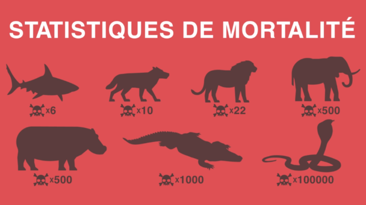

Птицы
Млекопитающие
Рыбы

Социологические и криминологические исследования по браконьерству указывают на это, в Северной Америке люди стремятся к коммерческой выгоде, домашнему потреблению, трофеям, удовольствиям и остроте в убийстве диких животных или потому, что не согласны с определенными правилами охоты, требуют традиционного права на охот)' или имеют отрицательную склонность к законным полномочиям.